Your whole printer fleet, in one window.
Supplies, trays, user accounts, accounting limits, address books and logs for FUJIFILM Apeos and ApeosPort multifunction printers — across every device at once, from a native macOS app.
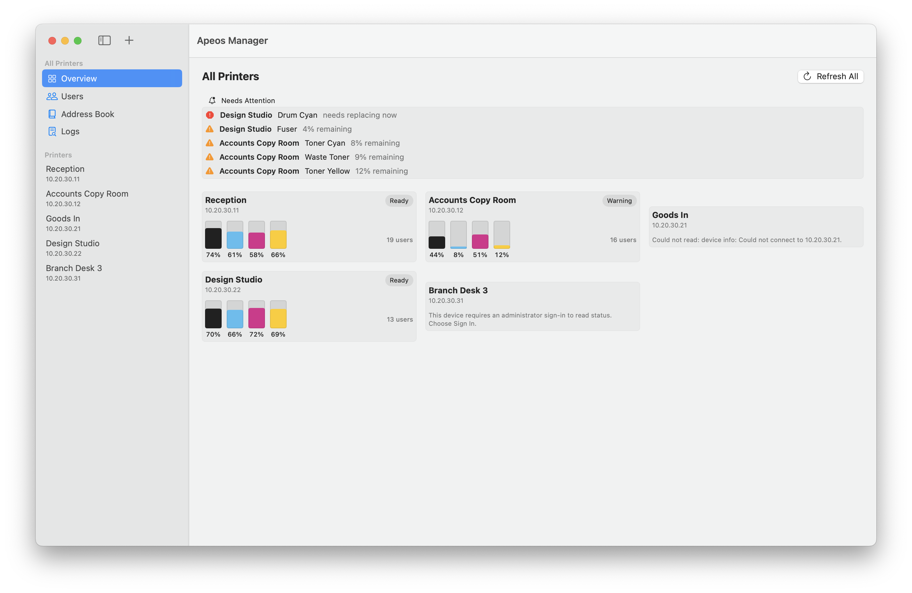
What it does
Fleet overview
Status, toner and drum levels and lifetime counters from every printer, with a single “needs attention” list gathered across all of them.
Users across the fleet
The union of accounts on every device, showing which printers hold each one. Create a user on many printers at once; edit membership per printer.
Accounting limits
Per-user copy, print and scan meters in colour and mono, with editable caps and counter resets — and a re-read after every write, because these devices accept changes they do not apply.
Permissions
Feature access per user for copy, fax, scan and print, which login methods the panel accepts, the device role, the permission group, and the address a user's scans are sent from.
Address books
Per printer and merged fleet-wide, with favourites, and every write confirmed by reading it back.
Job and fault logs
Who printed what, in what colour and on what size, per printer and across the fleet — plus the device fault log, with repeated codes counted.
Two apps, one core
The project builds two applications from one shared set of models and one shared transport. The administrator's app manages the fleet. The user's app shows one person their own allowance and never holds an administrator credential.
| App | For | What it does |
|---|---|---|
| Apeos Manager | administrators | The whole fleet — everything above. |
| Apeos Quota | everyone else | Your own printing allowance, in your menu bar. |
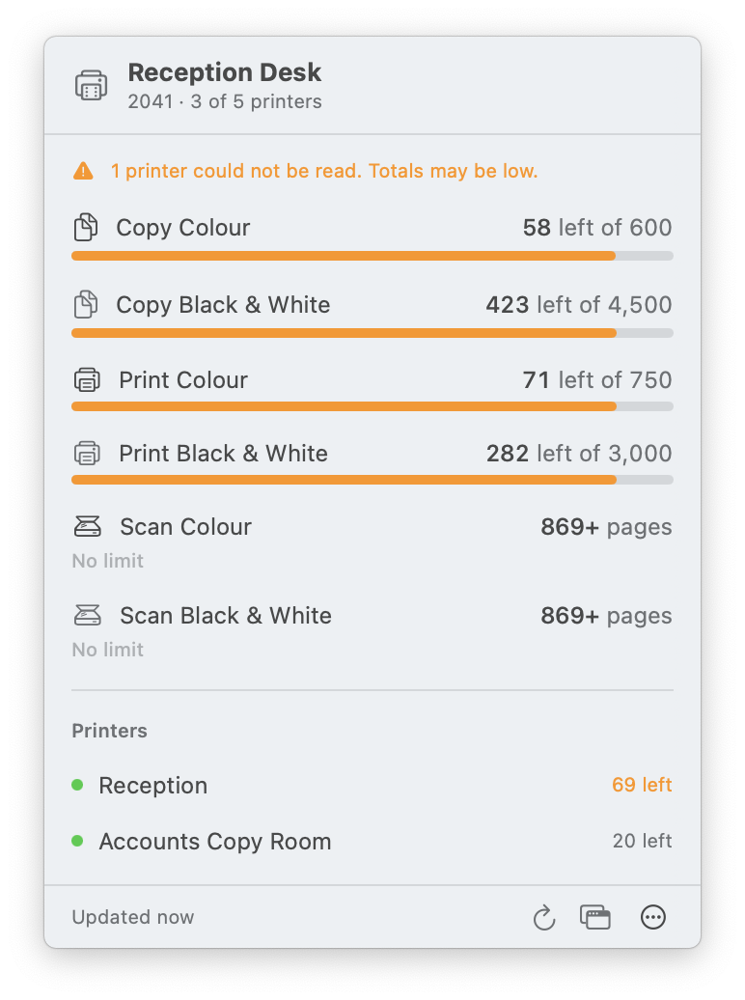
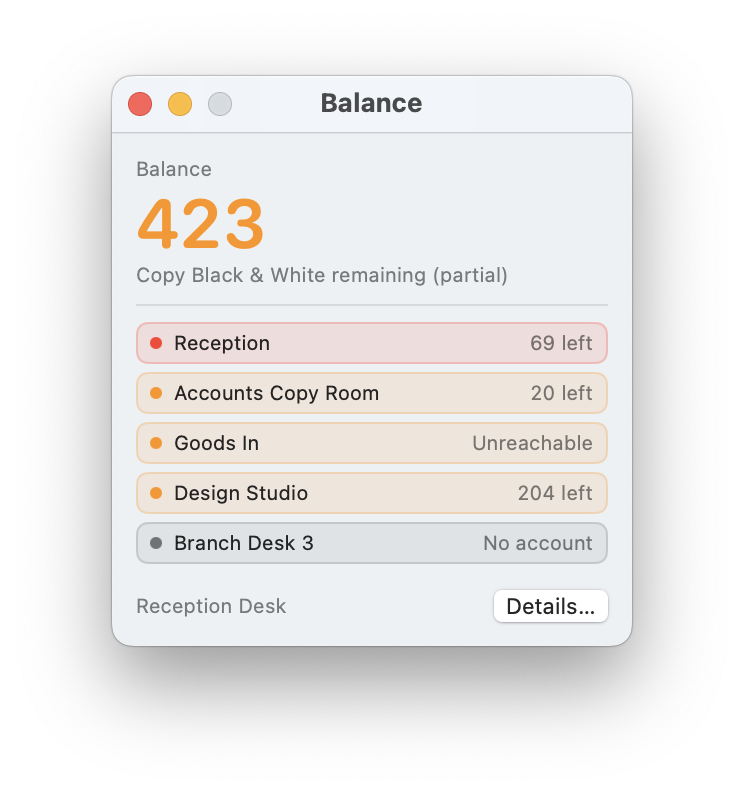
Screenshots
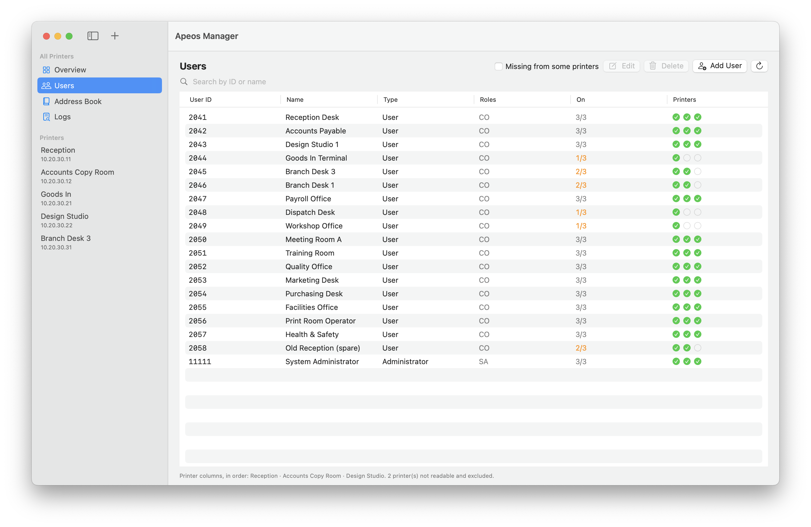
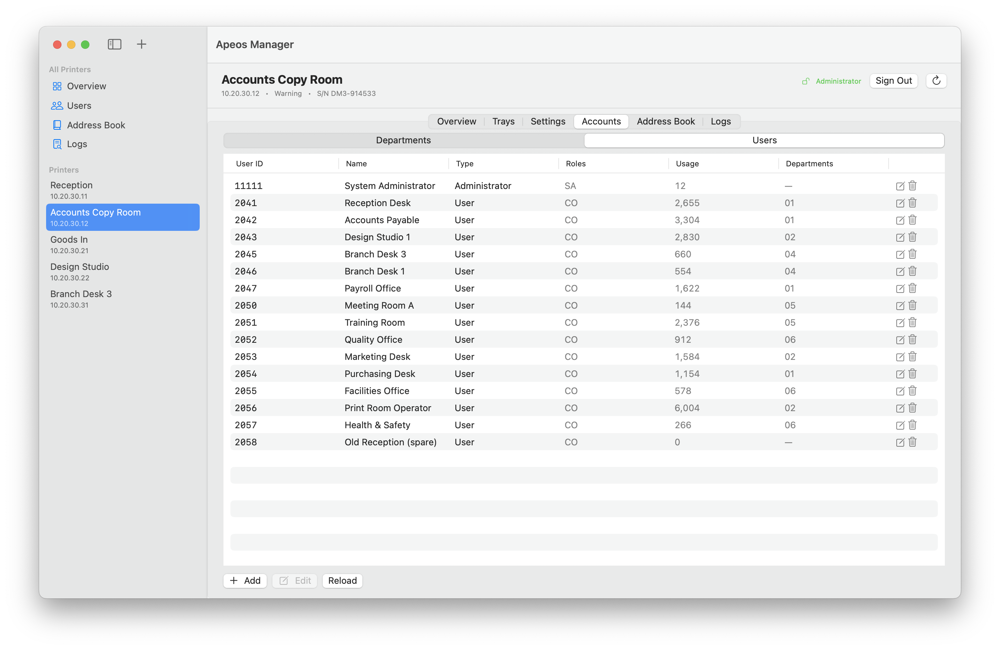
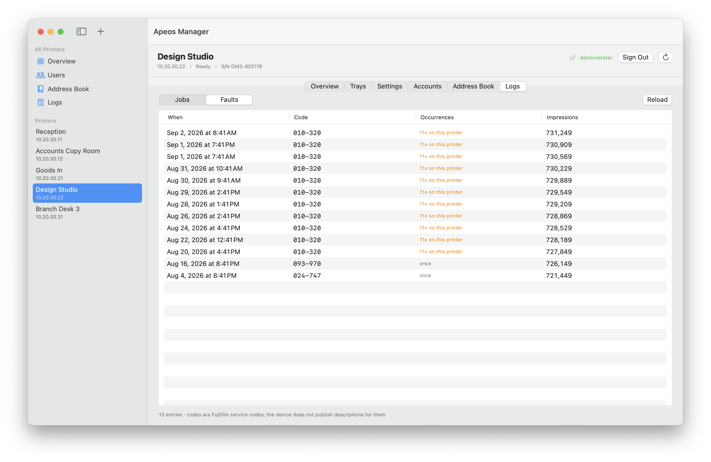
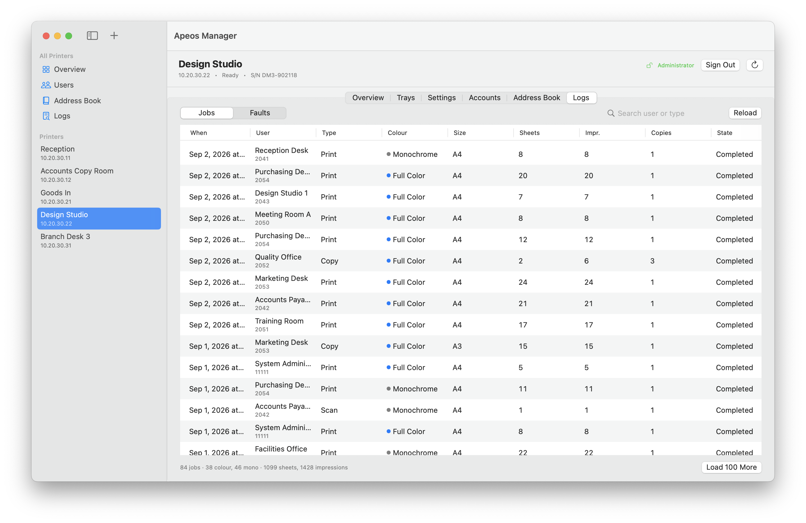
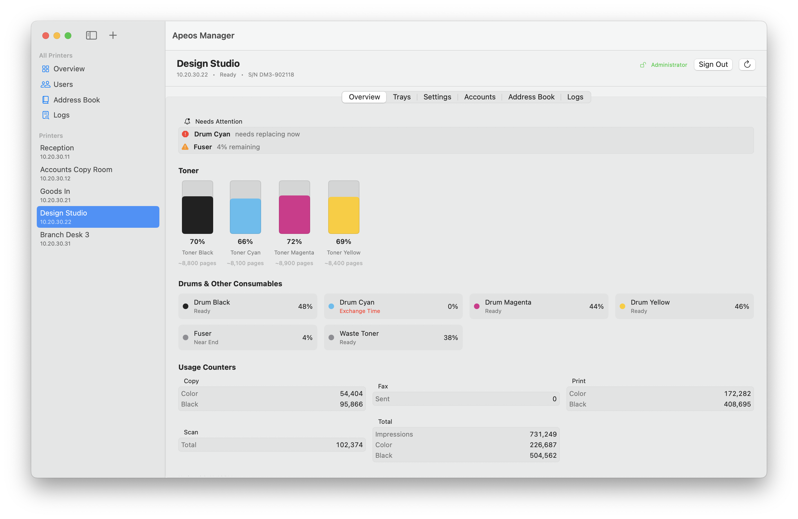
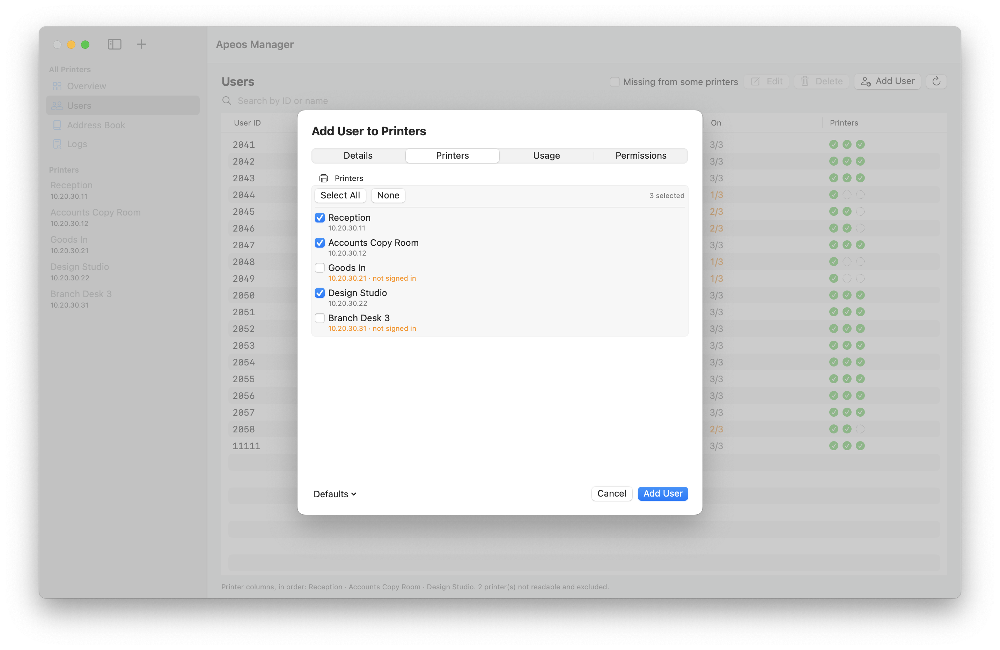
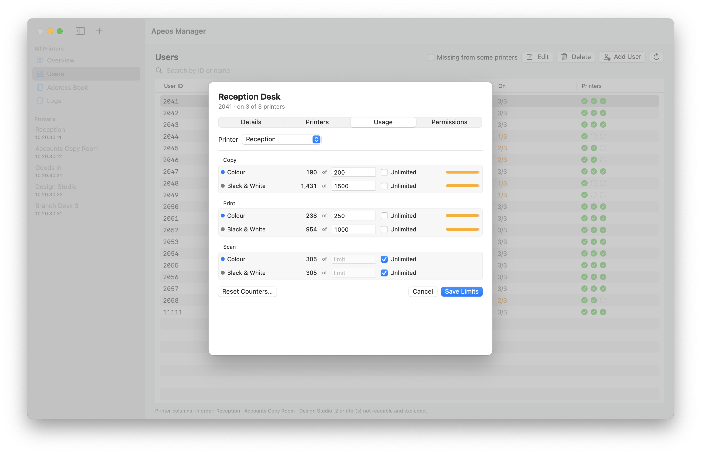
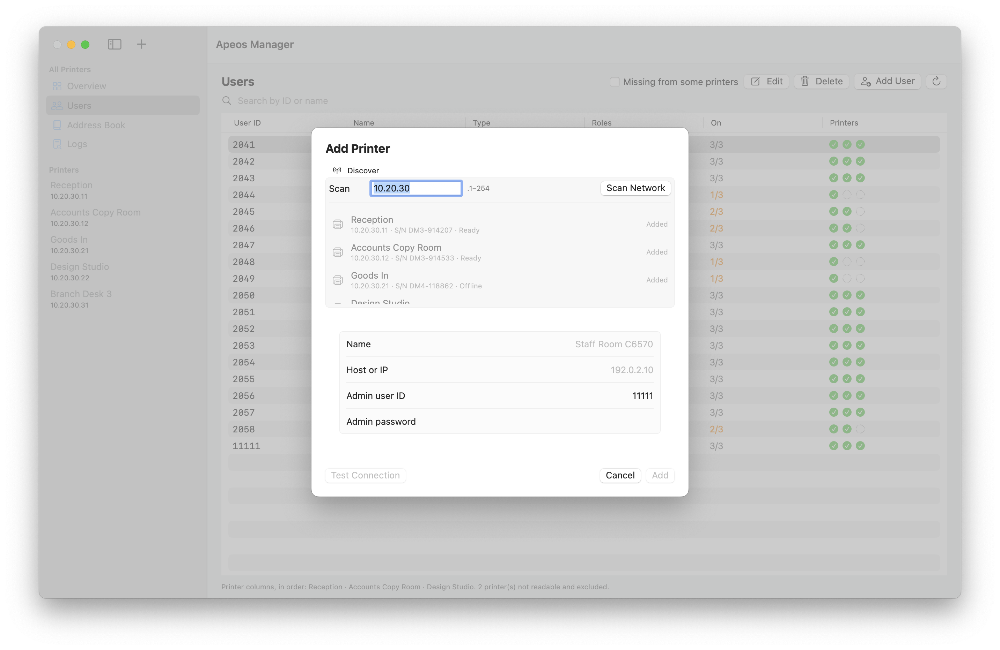
Try it without a printer
Both apps ship with a demonstration fleet built in. Launch either one with
-demoMode YES and it runs against a fictional site of five printers
— one healthy, one low on toner, one unreachable, one that refuses reads
without an administrator password, and one that says it is fine while a drum inside
it is finished.
/Applications/Apeos\ Manager.app/Contents/MacOS/ApeosManager -demoMode YES
/Applications/Apeos\ Quota.app/Contents/MacOS/ApeosQuota -demoMode YESEvery screenshot on this page was taken from it. A demo run contacts nothing on your network, reads no credential from your keychain, and writes nothing to your settings — the network client refuses to be constructed at all, so there is no path by which it could.
It is also the fastest way to see whether the app is worth installing, and to work out what a screen is telling you before you point it at hardware.
Getting started
- Download the latest release, unzip it, and drag both apps to Applications.
- Open Apeos Manager and press +. Either type a printer's address or sweep the subnet to find one.
- Give it the device's administrator ID and password. The password goes to your login keychain, never to a preferences file.
- Repeat for the rest of the fleet. The fleet-wide screens fill in as printers connect.
The manual covers each screen, what the device does and does not allow, and the parts of its behaviour worth knowing before you change anything.